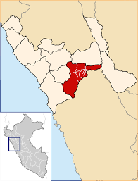

SANTIAGO DE CHUCO

CLIMA
La temperatura media anual es de 13,9°C, en tanto que el mes más cálido corresponde al mes de enero, alcanzando una temperatura de 22.1°C, y el mes más frío corresponde al mes de julio con 7,7°C.

UBICACION
Santiago de Chuco es una ciudad peruana, capital del distrito y la provincia homónimos en el departamento de La Libertad. Se sitúa a 165 kilómetros al este de la ciudad de Trujillo, la capital del departamento..
